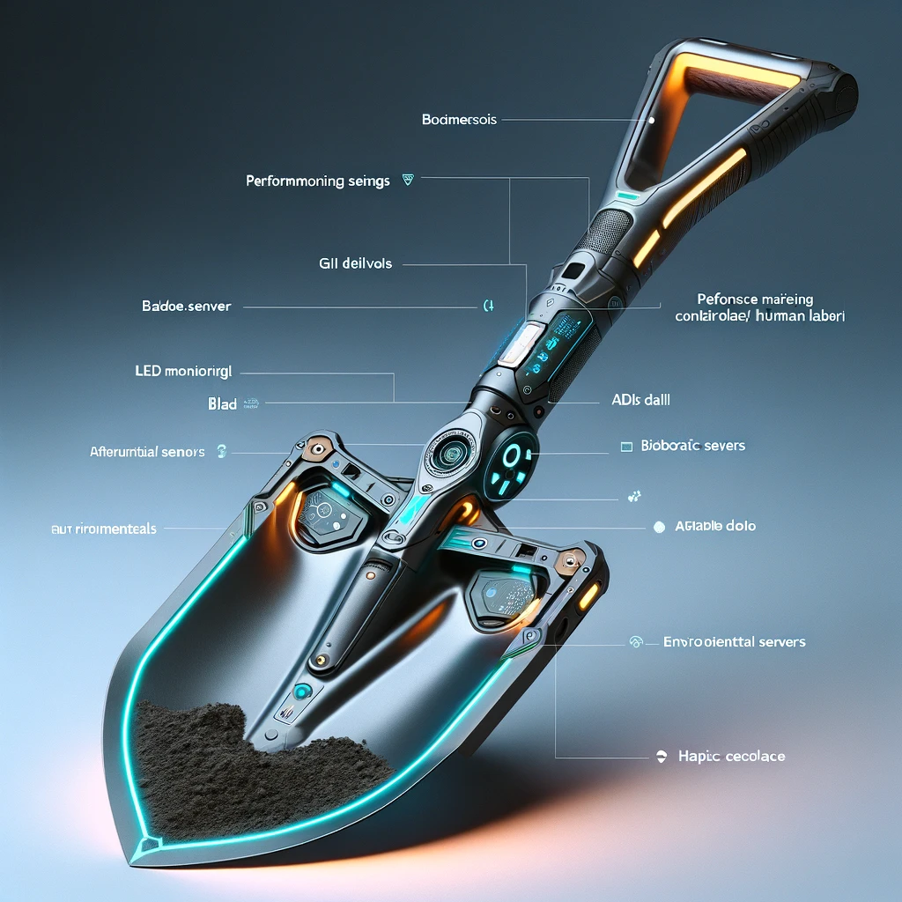
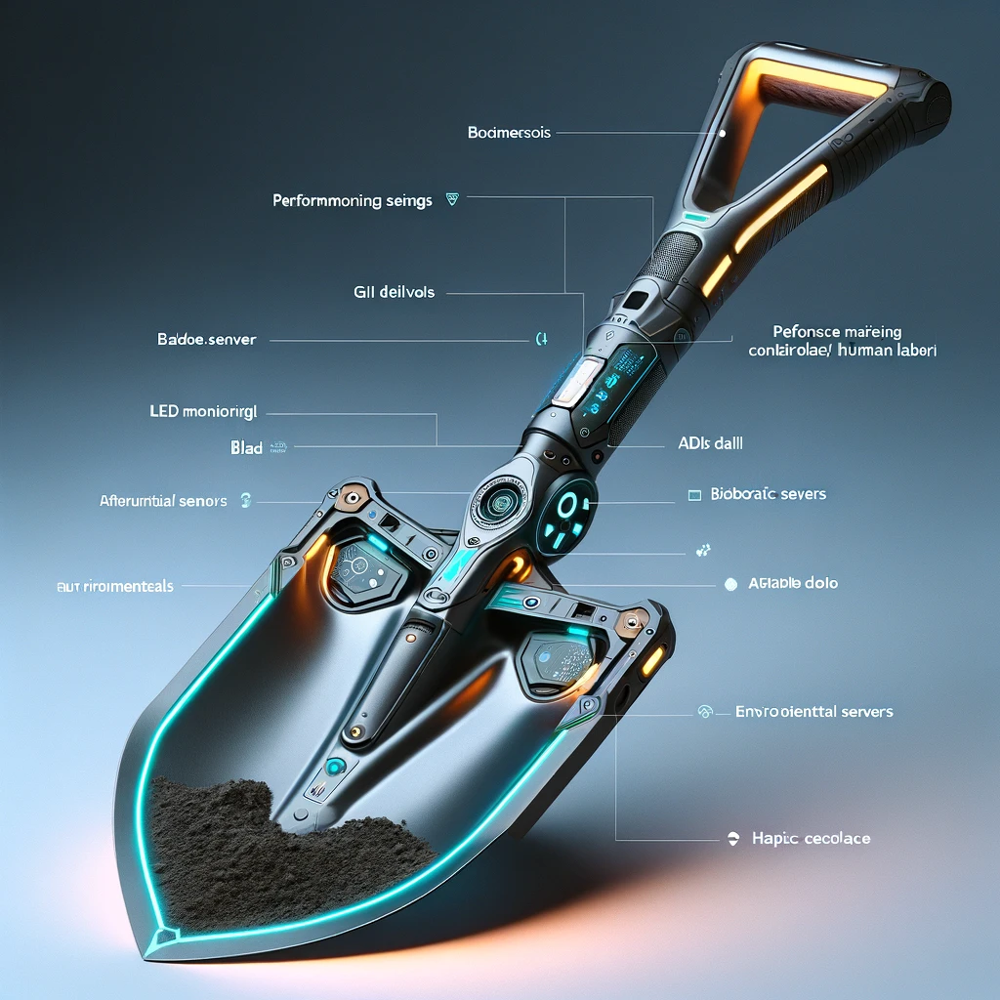

Digging Master 22 Pro
I started by visualizing a scenario with high AI dependence, as shown on the graph where AI integration leads to low employment in skilled jobs. This led me to imagine a world where AI overshadows human intelligence, relegating humans to basic labor with an ironic twist: technology, while advanced, is infused into simple tools, effectively reversing the role between humans and their tools.
I designed a shovel that not only aids but controls the worker, embedded with excessive features like LED lights, a speaker, and productivity sensors. This satire on modern technology's overabundance of features reflects our culture's tendency to value gadgets for their novelty rather than necessity.
The shovel embodies the essence of technology's potential overreach, and the image generated by AI impressively matches my original 3D model, highlighting the detailed conception of my idea.


 
